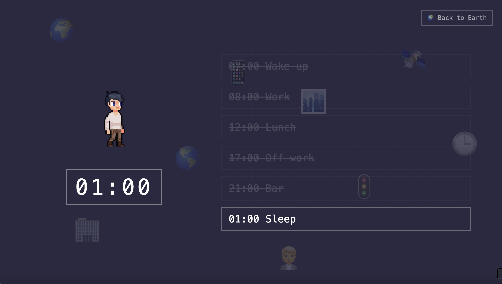
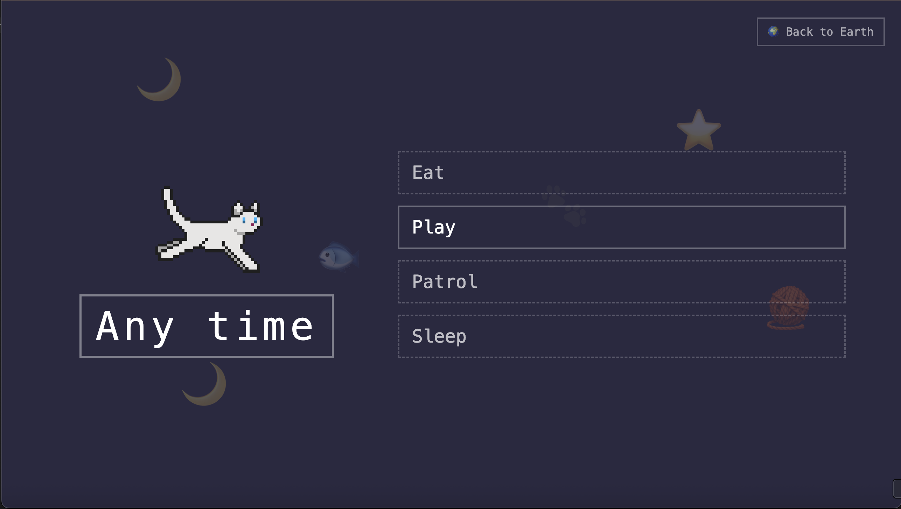

Human vs Cat
Choose how you enter this world →
Human vs Cat is an interactive web project that explores two different ways of experiencing time. The human side follows a fixed daily schedule, where activities only become available at certain hours. In contrast, the cat side allows users to choose actions freely at any moment. The project highlights that humans often live within structured routines while cats move more freely through time. Rather than judging one as better than the other, the project invites viewers to reflect on different rhythms of everyday life.
The project was built using HTML, CSS, and JavaScript to create a simple rule-based system where actions become available based on time or user choice.

